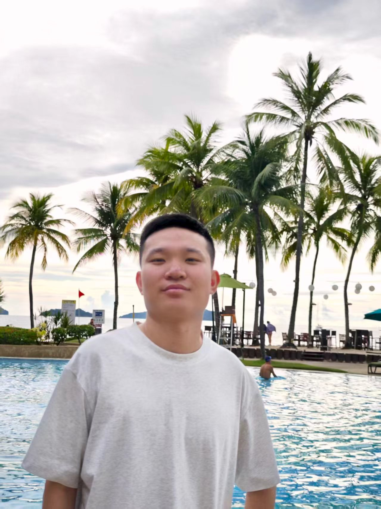

Ph.D. student in Computer Science
Fudan University
I am a Ph.D. student at Fudan University, advised by Prof. Zenglin Xu. Previously, I obtained my M.Sc. in Artificial Intelligence from Nanyang Technological University (Top 10%, GPA 4.15) and B.Sc. in Statistics from Shandong University (Outstanding Graduate).
GEM: Generative Entropy-Guided Preference Modeling for Few-shot Alignment of LLMs
AAAI 2026 (Oral)
Ph.D. in Computer Science and Technology
Fudan University | 2025 - Present
M.Sc. in Artificial Intelligence (Top 10%)
Nanyang Technological University | 2024 - 2025
B.Sc. in Statistics (Outstanding Graduate)
Shandong University | 2020 - 2024